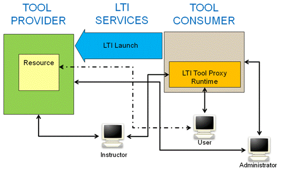
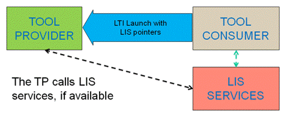
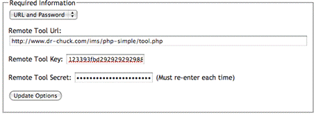

IMS Global Learning Tools Interoperability Implementation Guide
Final Version 1.1.1
Date Issued: 12 June 2012 (revised 20 September 2012)
Latest version: http://www.imsglobal.org/lti/
IPR and Distribution Notices
Recipients of this document are requested to submit, with their comments, notification of any relevant patent claims or other intellectual property rights of which they may be aware that might be infringed by any implementation of the specification set forth in this document, and to provide supporting documentation.
IMS takes no position regarding the validity or scope of any intellectual property or other rights that might be claimed to pertain to the implementation or use of the technology described in this document or the extent to which any license under such rights might or might not be available; neither does it represent that it has made any effort to identify any such rights. Information on IMS's procedures with respect to rights in IMS specifications can be found at the IMS Intellectual Property Rights web page: http://www.imsglobal.org/ipr/imsipr_policyFinal.pdf.
Copyright © 2012 IMS Global Learning Consortium. All Rights Reserved.
Use of this specification to develop products or services is governed by the license with IMS found on the IMS website: http://www.imsglobal.org/license.html.
Permission is granted to all parties to use excerpts from this document as needed in producing requests for proposals.
The limited permissions granted above are perpetual and will not be revoked by IMS or its successors or assigns.
THIS SPECIFICATION IS BEING OFFERED WITHOUT ANY WARRANTY WHATSOEVER, AND IN PARTICULAR, ANY WARRANTY OF NONINFRINGEMENT IS EXPRESSLY DISCLAIMED. ANY USE OF THIS SPECIFICATION SHALL BE MADE ENTIRELY AT THE IMPLEMENTER'S OWN RISK, AND NEITHER THE CONSORTIUM, NOR ANY OF ITS MEMBERS OR SUBMITTERS, SHALL HAVE ANY LIABILITY WHATSOEVER TO ANY IMPLEMENTER OR THIRD PARTY FOR ANY DAMAGES OF ANY NATURE WHATSOEVER, DIRECTLY OR INDIRECTLY, ARISING FROM THE USE OF THIS SPECIFICATION.
Join the discussion and post comments on the LTI Public Forum: http://www.imsglobal.org/community/forum/categories.cfm?catid=44
Table of Contents
1.1 Structure of this Document
4.1 Basic Launch Credential Management
4.2 OAuth Message Signing for x-www-form-urlencoded Messages
4.3 Security for application/xml Messages
5 Representing Basic Launch Links in a Cartridge
6 Using Learning Information Services with LTI
6.1 LTI Basic Outcomes Service
Appendix A – LTI Standard Vocabularies
A.1.1 LIS vocabulary for ContextType
A.2.1 LIS vocabulary for System Role
A.2.2 LIS vocabulary for Institution Role
A.2.3 LIS vocabulary for Context Role
Appendix B – Implementation Practice
B.1 Authoring Basic Links with Link-Level Credentials
B.2 Security Policy / SandBoxing Launch Requests
B.7 Administrator / Instructor User Interfaces / Custom Parameters
B.7.1 Instructor Creates New Tools
B.7.2 Admin Creates New Tools, Instructor Only Places Tools
Appendix C – Custom Parameter Substitution
C.3 LIS Course Template Variables
C.4 LIS Course Offering Variables
C.5 LIS Course Section Variables
1 Introduction
IMS is developing the Learning Tools Interoperability (LTI) specifications to allow remote tools and content to be integrated into a Learning Management System (LMS). This document brings a subset of those specifications together into this implementation guide that defines a profile of LTI and is the next iteration of the Basic LTI [BLTI, 10] specification that was released in May 2010.

Figure 1.1 Overview of LTI.
Throughout this document, we use specific terminology to describe the two main pieces of software involved in LTI. What we traditionally think of as the "Learning Management System" (LMS) is referred to as the "Tool Consumer" (TC) as it "consumes" the tool. The external tool or content is called the "Tool Provider" (TP) as it "provides" the tool for use in the Tool Consumer. Example Tool Providers might include an externally hosted testing system or a server that contains externally hosted premium content.
This document uses the term "context" where you might expect to see "course". A context is roughly equivalent to a course, project, or other collection of resources with a common set of users and roles. The word "context" is used instead of "course" because a course is only one kind of context (another type of context would be "group").
Typically within a context (e.g., a course), users can author many LTI content items, sometimes arranging them into folders like "Week 1" or "Pre-Work". LTI links are intended to be used like any other resource within the structure of a context. In particular, there is an expectation that there will often be multiple links scattered through the content structure for the context. LTI allows the TP to differentiate amongst those links using the concept of a resource_link_id. While all of the links from within a context will share the same context_id, each link within the context will be given a unique resource_link_id. This allows the TP to differentiate the content/features it shows on a resource-by-resource basis within a context by providing configuration options such as a resource picker to the instructor or administrator after the link has been launched.
This document uses the message signing approach from OAuth 1.0a protocol [OAuth, 10] to secure its message interactions between the TC and TP. OAuth signing requires a key and shared secret to sign messages. The key is transmitted with each message, as well as an OAuth-generated signature based on the key. The TP looks up the secret based on the provided key and re-computes the signature and compares the recomputed signature with the transmitted signature to verify the sender's credentials.
The TC can make choices as to how it manages credentials (keys and secrets) within its system. LTI has three patterns for the credentials: (1) the TC-wide credential for a particular TP domain which is set by the TC administrator and used for all launches to a particular TP domain, or (2) the TC-wide credential for a particular TP URL which is set by the TC administrator and used for all launches to a particular TP URL, or (3) each LTI link is protected by its own credential. The first and second patterns allow for a more seamless integration between a TC-instance and TP-instance from an instructor’s perspective. The third pattern allows instructors to "mashup" LTI links.
LTI has support for the TP to call IMS Learning Information Services (LIS) when those services can be made available to the TP. LTI does not require LIS services, but the TC can send LIS key information to the TP using values in the basic launch request.
Note on terminology: Version 1.0 of this specification was titled "Basic Learning Tools Interoperability" to indicate that it was a subset of overall planned LTI functionality. The version 1.1 of this document is renamed "Learning Tools Interoperability" to reflect that it adds functionality which future versions of this document will continue to expand on. At times within this document, you will find references to "basic" (e.g. "basic launch"). In the case of the basic launch message, it is simply one of many types of messages that will ultimately be described in future versions of this document. The basic terminology continues to be used in describing the particular launch message, in the IMS Common Cartridge resource schema to represent these basic launches, and in the security patterns for these basic launches. This terminology reflects the fact that these "basic" capabilities will be a subset of the overall LTI capabilities going forward.
1.1 Structure of this Document
The structure of this document is:
|
2 Use Cases for LTI |
A listing of the use cases describing the core usage scenarios of the LTI specification; |
|
3. Basic Launch Data |
A description of the data items that are passed as part of the POST data when a basic launch is performed; |
|
4. LTI Security Model |
The definition of the security environment for LTI; |
|
5. Representing Basic Launch Links in a Cartridge |
A description of the LTI link for inclusion in an IMS Common Cartridge; |
|
6. Using Learning Information Services with LTI |
A description of how to use LTI with IMS Learning Information Services; |
|
Appendix A LTI Standard Vocabularies |
A reference to the LTI
specification’s standard vocabularies; |
|
Appendix B Implementation Practice |
A non-normative discussion and recommendations to help guide implementations. |
|
Appendix C Custom Parameter Substitution |
A reference to the LTI specification’s custom parameter vocabularies. |
1.2 References
This LTI v1.1 specification marks the convergence of the Basic LTI v1.0 spec with the LTI v1.0 Internal Draft documents (formerly known as full LTI).
[BLTI, 10] IMS Global Basic Learning Tools Interoperability v1.0, IMS Global Learning Consortium, C.Severance, May 2010. http://www.imsglobal.org/lti/.
[CC, 08a] IMS Global Common Cartridge v1.0, IMS Global Learning Consortium, K.Riley, October 2008. http://www.imsglobal.org/cc/.
[GWS, 06] IMS Global General Web Services WSDL Binding Guidelines v1.0, C.Schroeder, J.Simon and C.Smythe, IMS Global Learning Consortium, January 2006. http://www.imsglobal.org/gws/.
[LIS, 11] IMS Global Learning Information Services v2.0, L.Feng, W.Lee and C.Smythe, IMS Global Learning Consortium, June 2011. http://www.imsglobal.org/lis/.
[LIS, 11 OMS] IMS Outcomes Management Service Information Model v1.0, L.Feng and C.Smythe, IMS Global Learning Consortium, March 2010, http://www.imsglobal.org/lis/.
[OAuth, 10] The OAuth 1.0 Protocol, E. Hammer-Lahav. Retrieved 22 November 2011 from http://tools.ietf.org/html/rfc5849
[OBH, 11] OAuth Request Body Hash, B. Eaton, E. Hammer-Lahav. Retrieved 22 November 2011 from http://oauth.googlecode.com/svn/spec/ext/body_hash/1.0/oauth-bodyhash.html
2 Use Cases for LTI
This section describes common scenarios for the LTI v1.1 specification.
|
Use Case Title: |
Setting TP Domain Credentials (Basic Launch) |
|
Use Case Local ID: |
LTIv1p1-01 |
|
Brief Description: |
The TC administrator configures TP domain credentials for a particular TP. These credentials apply to LTI links authored directly in the TC system and also to LTI links imported from a Common Cartridge (see Use Case LTIv1p1-03). |
|
Level: |
Summary |
|
Actors: |
· TC Administrator · TP Administrator |
|
Basic Flow of Events: |
1. Generate credentials. The TP Administrator creates the key and secret combination for the TC (where the TC administrator may request a particular key, often the TC domain name). 2. Exchange the credentials. The TC Administrator obtains the key, secret and TP domain name from the TP administrator. The LTI specification does not prescribe any particular method for this exchange. 3. Persist the credentials in the TC. The TC Administrator associates the credentials with TP’s domain and persists this information using a TC-provided dialog or configuration mechanism. |
|
Use Case Title: |
Setting Link Level Credentials (Basic Launch) |
|
Use Case Local ID: |
LTIv1p1-02 |
|
Brief Description: |
An instructor authors an LTI link and sets the key/password for that link. |
|
Level: |
Summary |
|
Actors: |
· Instructor · Tool Provider (TP) |
|
Preconditions: |
None |
|
Basic Flow of Events: |
1. Exchange Link Level Credentials. The Instructor contacts the TP to obtain access to a provider tool or content. The TP provides the Instructor with (1) an LTI launch URL or XML snippet for the content or tool, (2) a key that will be used to access this content/tool, and (3) a secret associated with the key. The LTI specification does not prescribe any mechanism for this exchange. 2. Persist Link Level Credentials in the TC system. The Instructor enters the three values (URL or XML snippet, Key, Secret) into an LTI authoring dialog in the TC system. |
|
Managing Credentials for LTI Links Imported from a Cartridge |
|
|
Use Case Local ID: |
LTIv1p1-03 |
|
Brief Description: |
An Instructor imports a Common Cartridge containing LTI link descriptors into their context, and users use the content. |
|
Level: |
Summary |
|
Actors: |
· Instructor · TC User (typically a Student or Instructor) |
|
Preconditions: |
· A cartridge creator has authored a Common Cartridge that contains one or more LTI Link descriptors. These descriptors specify the launch URL(s) and other data associated with the links, but they do not contain keys or secrets. · In accordance with Use Case LTIv1p1-01, the TC Administrator has set the domain credentials to particular TP(s) that are referenced in the cartridge. |
|
Basic Flow of Events: |
1. Import the cartridge. The Instructor obtains the Common Cartridge and imports it into a learning context within the TC system. 2. Use domain credentials during Tool Launch. When a TC User launches an LTI link imported from the Common Cartridge, the TC signs the launch request using the pre-configured credentials associated with the TP address. In particular, as long as the TC-wide credentials are already installed, the Instructor does not need to take any further action to secure the launch request beyond importing a cartridge. |
|
Alternative Flows: |
A. Domain Credentials are not predefined If the domain credentials are not predefined within the TC system (i.e., the preconditions to this use case are not satisfied) then at Step 2 the launch requests will not be signed. In this case, the TC may (at its discretion) refuse to allow the Tool Launch to proceed. If an unsigned tool launch does occur, the TP may (at its discretion) refuse to honor the request. To correct such launch failures, it is possible to add domain or link level credentials (in accordance with Use Cases LTIv1p1-01 and LTIv1p1-02 respectively) after the cartridge has been imported. |
|
Use Case Title: |
Launching an Authored Basic Launch Link from a Context |
|
Use Case Local ID: |
LTIv1p1-04 |
|
Brief Description: |
A non-Instructor user selects a basic launch link from a context in the TC. |
|
Actors: |
· TC User |
|
Preconditions: |
An Instructor has properly authored or imported a basic launch Link and there are appropriate credentials in place. |
|
Basic Flow of Events: |
1. The TC User clicks on the link in the TC UI. 2. The tool or content from the TP appears in the TC UI or in another window. If JavaScript is turned off – the TC User will need to click on a "continue" button to send the POST data to the TP. |
|
Use Case Title: |
Launching Basic Launch Link Imported from a Cartridge (with secret) |
|
Use Case Local ID: |
LTIv1p1-05 |
|
Brief Description: |
An Instructor imports a Common Cartridge containing basic launch link descriptors into their context and users use the content. |
|
Actors: |
· Cartridge Creator · Instructor · TC User |
|
Preconditions: |
The TC Administrator has received and installed the appropriate credentials for the particular TP(s) that are referenced in the cartridge. |
|
Basic Flow of Events: |
1. The Cartridge Creator authors a cartridge and includes one or more basic launch link descriptors in the cartridge. The basic launch link descriptors in the cartridge contain a launch URL(s) and other data but do not contain keys or secrets. 2. The Instructor obtains the Common Cartridge and imports it into their context in the TC system. 3. When a TC User follows the basic launch link imported
from the Common Cartridge, the TC uses the pre-configured
credentials associated with the TP domain or URLs. |
|
Alternate Path |
A. If the preconditions are not satisfied, it is also possible to set the credentials after the cartridge import has taken place. If a launch occurs before credentials have been defined, it is the responsibility of the TP to notify the user that credentials are required. |
|
Use Case Title: |
Launching Basic Link Imported from a Cartridge (no secret) |
|
Use Case Local ID: |
LTIv1p1-06 |
|
Brief Description: |
An Instructor imports a Common Cartridge containing basic launch link descriptors into their context and users use the content. Note that this scenario is optional – the TC and/or TP may decide that basic launches without secrets are treated as an error. |
|
Actors: |
· Cartridge Creator · Instructor · TC User |
|
Preconditions: |
None. |
|
Basic Flow of Events: |
1. The Cartridge Creator authors a cartridge and includes one or more basic launch link descriptors in the cartridge. The basic launch link descriptors in the cartridge contain a launch URL(s) and other data but do not contain keys or secrets. 2. The Instructor obtains the Common Cartridge and imports it into their context in the TC system. 3. When a TC User follows the basic launch link from the Common Cartridge, the TC launches the basic launch link with no authentication or signature information. |
|
Use Case Title: |
Returning a Decimal Score (0.0-1.0) from the TP to the TC |
|
Use Case Local ID: |
LTIv1p1-07 |
|
Brief Description: |
An instructor creates a resource link in a course and indicates that it is to receive scores from the TP and sets up any necessary routing between the LTI link and the grade book. Whether or not the TC accepts scores for a particular user/context/link is up to some combination of the TC Admin and TC Instructor. |
|
Actors: |
· TC Admin · Instructor · TC User |
|
Preconditions: |
The TC admin enables support for score routing in the TC (either universally or per TP). |
|
Basic Flow of Events: |
1. The Instructor authors a link and indicates that a line item is associated with the link. 2. The TC user launches the link and the TC includes the service endpoint for the LIS Basic Outcomes Service and the lis_result_sourcedid to allow the TP to make service calls to set, read, and delete scores. 3. The TP system makes calls to the TC’s Outcomes Service to set, read, and/or delete scores as needed. These service operations can be done at any time as it is a server to server trust (i.e., not just during the launch period). |
3 Basic Launch Data
This section describes the data items that are passed as part of the POST data when a basic launch is performed. Very few of the fields are technically required as each Tool Provider may have different requirements. Some TPs may see the fields in the launch as information to be gathered for tracking and others may need highly detailed and precise information to perform high-stakes activities and reliably and securely return high-stakes results from those activities.
TC systems should provide as much data as possible in each launch to maximize the chance that the TP will have the data it needs to function properly. TC systems may have sandboxing features that limit the sending of certain LTI data elements only to "approved" TPs. It is outside the scope of the specification to define the nature of the TC sandboxing of LTI launches. TPs should be prepared to work with partial information – either because the TC does not have the information or the TC has been configured not to share the information with the TP.
If a profile wants to extend these fields, they should prefix all fields not described herein with "ext_".
lti_message_type=basic-lti-launch-request
This indicates that this is a basic launch message. This allows
a TP to accept a number of different LTI message types at the
same launch URL. This parameter is required.
lti_version=LTI-1p0
This
indicates which version of the specification is being used for
this particular message. Since launches for version 1.1 are
upwards compatible with 1.0 launches, this value is not advanced
for LTI 1.1. This parameter is required.
resource_link_id=88391-e1919-bb3456
This is an opaque unique identifier that the TC guarantees will
be unique within the TC for every placement of the link. If the
tool / activity is placed multiple times in the same context,
each of those placements will be distinct. This value will also
change if the item is exported from one system or context and
imported into another system or context. This parameter is required.
resource_link_title=My
Weekly Wiki
A plain text[1]
title for the resource. This is the clickable text that appears
in the link. This parameter is recommended.
resource_link_description=…
A plain text description of the link’s destination,
suitable for display alongside the link. Typically no more than a
few lines long. This parameter is optional.
user_id=0ae836b9-7fc9-4060-006f-27b2066ac545
Uniquely identifies the user. This should not contain any
identifying information for the user. Best practice is that this
field should be a TC-generated long-term “primary
key” to the user record – not the “logical
key". At a minimum, this value needs to be unique within a TC.
This parameter is recommended.
user_image=http://....
This attribute specifies the URI for an image of the user
who launches this request. This image is suitable for use as a
"profile picture" or an avatar representing the user. It is
expected to be a relatively small graphic image file using a
widely supported image format (i.e., PNG, JPG, or GIF) with a
square aspect ratio. This parameter is optional.
roles=Instructor
A
comma-separated list of URN values for roles. If this list is
non-empty, it should contain at least one role from the LIS
System Role, LIS Institution Role, or LIS Context Role
vocabularies (see Appendix A). The assumed namespace of these
URNs is the LIS vocabulary of LIS Context Roles so TCs can use
the handles when the intent is to refer to an LIS context role.
If the TC wants to include a role from another namespace, a
fully-qualified URN should be used. Usage of roles from non-LIS
vocabularies is discouraged as it may limit interoperability.
This parameter is recommended.
lis_person_name_given=Jane
lis_person_name_family=Public
lis_person_name_full=Jane Q. Public
lis_person_contact_email_primary=user@school.edu
These fields contain information about the user account that is
performing this launch. The names of these data items are taken
from LIS [LIS, 11]. The precise meaning of the content in these
fields is defined by LIS. These parameters are recommended unless
they are suppressed because of privacy settings.
role_scope_mentor=
f5b2cc6c-8c5c-24e8-75cc-fac504df920f,dc19e42c-b0fe-68b8-167e-4b1a8f2b367e
A comma separated list of the user_id values which the
current user can access as a mentor. The typical use case for
this parameter is where the Mentor role represents a parent,
guardian or auditor. It may be used in different ways by each
TP, but the general expectation is that the mentor will be
provided with access to tracking and summary information, but not
necessarily the user’s personal content or assignment
submissions. In order to accommodate user_id values which
contain a comma, each user_id should be url-encoded. This also
means that each user_id from the comma separated list should
url-decoded before a TP uses it. This parameter is optional and
should only be used when one of the roles passed for the current
user is for urn:lti:role:ims/lis/Mentor.
context_id=8213060-006f-27b2066ac545
This is an opaque identifier that uniquely identifies the context
that contains the link being launched. This parameter is
recommended.
context_type=CourseSection
This string is a comma-separated list of URN values that
identify the type of context. At a minimum, the list MUST
include a URN value drawn from the LIS vocabulary (see Appendix
A). The assumed namespace of these URNs is the LIS vocabulary so
TCs can use the handles when the intent is to refer to an LIS
context type. If the TC wants to include a context type from
another namespace, a fully-qualified URN should be used. This
parameter is optional.
context_title=Design
of Personal Environments
A plain
text title of the context – it should be about the length
of a line. This parameter is recommended.
context_label=SI182
A
plain text label for the context – intended to fit in a
column. This parameter is recommended.
launch_presentation_locale=en-US
Language, country and variant as represented
using the IETF Best Practices for Tags for Identifying Languages
(BCP-47) available at
http://www.rfc-editor.org/rfc/bcp/bcp47.txt
launch_presentation_document_target=iframe
The value should be either ‘frame’,
‘iframe’ or ‘window’. This field
communicates the kind of browser window/frame where the TC has
launched the tool. The TP can ignore this parameter and detect
its environment through JavaScript, but this parameter gives the
TP the information without requiring the use of JavaScript if the
tool prefers. This parameter is recommended.
launch_presentation_css_url=
This is a URL to an LMS-specific CSS URL. There are no
standards that describe exactly what CSS classes, etc. should be
in this CSS. The TC could send its standard CSS URL that it
would apply to its local tools. The TC should include styling
for HTML tags to set font, color, etc. and also include its
proprietary tags used to style its internal tools.
Someday perhaps we will come up with a cross-LMS standard for CSS
classes to allow a tool to look "built-in" with only one set of
markup, but until that happens, the
launch_presentation_css_url allows tools a chance to
adapt their look and feel across LMS systems to some
degree.
launch_presentation_width=320
The width of the window or frame where the content from
the tool will be displayed. The tool can ignore this parameter
and detect its environment through JavaScript, but this parameter
gives the TP the information without requiring the use of
JavaScript if the tool prefers. This parameter is
recommended.
launch_presentation_height=240
The height of the window or frame where the content from
the tool will be displayed. The tool can ignore this parameter
and detect its environment through JavaScript, but this parameter
gives the TP the information without requiring the use of
JavaScript if the tool prefers. This parameter is
recommended.
launch_presentation_return_url=http://lmsng.school.edu/portal/123/page/988/
Fully qualified URL where the TP
can redirect the user back to the TC interface. This URL can be
used once the TP is finished or if the TP cannot start or has
some technical difficulty. In the case of an error, the TP may
add a parameter called lti_errormsg that includes some
detail as to the nature of the error. The lti_errormsg
value should make sense if displayed to the user. If the tool
has displayed a message to the end user and only wants to give
the TC a message to log, use the parameter lti_errorlog
instead of lti_errormsg. If the tool is terminating
normally, and wants a message displayed to the user it can
include a text message as the lti_msg parameter to the
return URL. If the tool is terminating normally and wants to give
the TC a message to log, use the parameter lti_log. This
data should be sent on the URL as a GET – so the TP should
take care to keep the overall length of the parameters small
enough to fit within the limitations of a GET request. This
parameter is recommended.
tool_consumer_info_product_family_code=desire2learn
In order to better assist tools in using extensions and also
making their user interface fit into the TC's user interface that
they are being called from, each TC is encouraged to include the
this parameter. Possible example values for this field might
be:
learn
desire2learn
sakai
eracer
olat
webct
This parameter is
recommended.
tool_consumer_info_version=9.2.4
This field should have a major release number followed by a period. The format of the minor release is flexible. Possible values for this field might be:
9.1.7081
2.8-01
7.1
8
The TP should be flexible
when parsing this field. This parameter is recommended.
tool_consumer_instance_guid=lmsng.school.edu
This is a unique identifier for the TC. A common practice is to
use the DNS of the organization or the DNS of the TC instance.
If the organization has multiple TC instances, then the best
practice is to prefix the domain name with a locally unique
identifier for the TC instance. In the single-tenancy case, the
tool consumer data can be often be derived from the
oauth_consumer_key. In a multi-tenancy case this can be
used to differentiate between the multiple tenants within a
single installation of a Tool Consumer. This parameter is
strongly recommended in systems capable of multi-tenancy.
tool_consumer_instance_name=SchoolU
This is a plain text user visible field – it should be
about the length of a column. This parameter is recommended.
tool_consumer_instance_description=University of School
(LMSng)
This is a plain text
user visible field – it should be about the length of a
line. This parameter is optional.
tool_consumer_instance_url=http://lmsng.school.edu
This is the URL of the consumer instance. This parameter is
optional.
tool_consumer_instance_contact_email=System.Admin@school.edu
An email contact for the TC
instance. This parameter is recommended.
custom_keyname=value
The creator of an LTI link can add custom key/value
parameters to a launch which are to be included with the launch
of the LTI link. The Common Cartridge section below describes how
these parameters are represented when storing custom parameters
in a Common Cartridge.
When there are custom name / value parameters in the launch, a POST parameter is included for each custom parameter. The parameter names are mapped to lower case and any character that is neither a number nor letter in a parameter name is replaced with an "underscore". So if a custom entry was as follows:
Review:Chapter=1.2.56
it would be mapped to:
custom_review_chapter=1.2.56
Creators of LTI links would be well served to limit their parameter names to lower case and to use no punctuation other than underscores.
If these custom parameters are included in the LTI link, the TC must include them in the launch data or the TP may fail to function.
TC implementations may have the ability to make value substitutions for custom parameters as described in Appendix C. For example if a custom parameter was:
xstart=$CourseSection.timeFrame.begin
the parameter would be:
custom_xstart=2012-04-21T01:00:00Z
Note that a DateTime data type in IMS LIS represents a combined date and time in the format of ISO 8601 i.e., ‘YYYY-MM-DDThh:mm:ssTZD’. The time is denoted in Coordinated Universal Time (UTC) with TZD denoting the time zone offset in hours and minutes with respect to UTC.
It is important for a TP not to depend on the TC supporting any particular parameter substitution. If a TC that did not support parameter substitution were to see the above custom parameter, it would simply send:
custom_xstart=$CourseSection.timeFrame.begin
as the parameter (i.e., send the parameter unsubstituted). It is the responsibility of the TP to deal with both kinds of launches from TCs (i.e., with and without substitution available).
In addition to these data items for the LTI launch, the next section describes additional security parameters which are to be included with the launch.
4 LTI Security Model
4.1 Basic Launch Credential Management
The security environment for basic launches must be set up using out-of-band interactions between the TP administrator and either the TC administrator or an Instructor who will be authoring a basic launch link.
As a best practice, the TP should isolate data based on the key. The TP must decide exactly how the key is used to isolate data. For example, the TP might maintain a table that maps multiple keys into a single data silo. Or, the TP might arrange to use the same key repeatedly in all cases where data are to belong to the same data silo.
There are two possible credentials associated with a particular basic launch.
1. TC-wide instance guid and secret associated with a particular TP. The TC-wide instance guid establishes the identity of the TC for launches to a particular TP. Once the TC-wide secret is established for a TP, all basic launches to the TP’s domain will use this same secret. Using a TC-wide secret gives TPs the option of trusting user information and context information across multiple contexts within a particular TC instance as being maintained properly by the TC.
In order to select the TC-wide password to be used for a particular basic launch link, the TC examines the domain name in the launch URL for the basic launch link. The TC-wide password is looked up in the list of TC-wide passwords scanning the domain name of the launch URL from right to left. So for example, if the launch URL was:
http://launch.math.vendor.com/launch.php
The TC would look up the following TC-wide secret keys in order from specific to general: launch.math.vendor.com, math.vendor.com, and then vendor.com. So when TPs are generating link URLs and giving them to an instructor or embedding those links in a cartridge, it is important to use consistent domain names in those launch URLs so as to be able to match a TC-wide secret for a particular TP with the appropriate launches.
2. Link-level key and secret associated with a particular link. This will occur when the basic launch link is directly authored by the instructor within the TC. This secret will often be produced when the Instructor creates or gains access to a TP content/tool and the TP content/tool provides the instructor with a key and secret associated with the TP link.
Basic launches can happen from the TC with any combination of TC-wide and link-level credentials including one or the other, both, or neither being present. When both are present the launch uses the TC-wide secret to sign the request.
If there is no key/secret combination available for this launch and the TC wants to perform the launch, the TC should not sign the launch data using OAuth. The TC can decide if it wants to send unsigned requests and the TP can decide if it wants to accept unsigned requests. A TC may also choose to treat the lack of key/secret values as an error and refuse to perform the launch.
4.2 OAuth Message Signing for x-www-form-urlencoded Messages
OAuth signing is a security mechanism designed to protect POST and GET requests. This section only applies to protecting launch and other messages that are being serialized and sent using POST.
The OAuth 1.0 specification [OAuth, 10] specifies how to construct a base message string and then sign that string using a secret. The signature is then sent as part of the POST request and is validated by the TP using OAuth. The website http://www.oauth.net contains the specification for OAuth 1.0 and sample source code for implementing OAuth signing.
Per the OAuth
specification, the signing process produces a number of values
that are to be added to the launch request including the
oauth_consumer_key:
oauth_consumer_key=b289378-f88d-2929-ctools.umich.edu
oauth_signature_method=HMAC-SHA1
oauth_timestamp=1244834250
oauth_nonce=1244834250435893000
oauth_version=1.0
oauth_signature=Xddn2A%2BjzwjgBIVYkvigaKxCdcc%3D
oauth_callback=about:blank
The important values for signing a message using OAuth are the oauth_consumer_key and oauth_consumer_secret. The oauth_consumer_key is passed in the message as plain text and identifies which TC (e.g., LMS) is sending the message allowing the TP (i.e., application) to look up the appropriate secret for validation. The oauth_consumer_secret is used to sign the message.
The oauth_callback is really not used in a signing-only scenario (OAuth 1.0 documentation section 6.2.3 [OAuth, 10]) so if your OAuth library demands it, you can set it to any value such as "about:blank". Also note that launch_presentation_return_url serves a very different purpose from oauth_callback.
Since we are using OAuth in a signing-only scenario (i.e., we are not using OAuth to transfer third-party identity), there is no need for an oauth_token.
Tool Providers must support at a minimum the HMAC-SHA1 signing method with OAuth data passed as POST data.
Upon receipt of the POST, the TP will perform the OAuth validation utilizing the shared secret it must have stored locally for the relationship with the TC in the oauth_consumer_key. The timestamp should also be validated to be within a specific time interval. This time interval can be TP defined, but should be small (on the order of a few minutes if you do not record nonces or a few hours if you do). It does rely on the time on the TC and the TP being in sync though.
The TP should keep a record of nonces received and only allow the use of any nonce a single time. Combined with the timestamp, this means that they only have to keep track of nonces for a period of time equal to their acceptable time interval. Recommended practice would be to have a time interval of 90 minutes so that you keep a record of nonces for 90 minutes.
NOTE that this security profile requires the TC and TP to have synchronized clocks. The use of a configurable time interval can adjust for slightly-off clocks, but setting the interval too large is discouraged.
4.3 Security for application/xml Messages
These services follow a "Plain Old XML" (POX) pattern and the messages are signed using OAuth body signing to insure message integrity and establish the identity of the calling system (i.e., the TP).
The body of the message is XML that follows the schema for the particular service operation requested, and the message is signed using the oauth_consumer_key and oauth_consumer_secret that was used to do the launch of the tool for the particular user/course/resource.
The procedure for signing a body using OAuth [OBH, 11] is described on this website: http://oauth.googlecode.com/svn/spec/ext/body_hash/1.0/oauth-bodyhash.html
It is important that all messages using these services must use a content type of application/xml. The services may legitimately reject any other content type. In particular, the OAuth body signing specification specifically prohibits the combination of oauth_body_hash and x-www-form-urlencoded data in any request.
As per the OAuth body hashing specification, all of the OAuth parameters must be sent as part of the Authorization header. In particular, OAuth parameters from the request URL and POST body will be ignored.
The oauth_body_hash [OBH, 11] is computed using a SHA-1 hash of the body contents and added to the Authorization header. All of the OAuth parameters, HTTP method, and URL are signed like any other OAuth signed request. Other than in producing the body hash value, the actual POST data is not involved in the computation of the oauth_signature.
Most OAuth libraries can produce and verify the signatures for these messages as most libraries already support sending OAuth parameters in the Authorization header.
A sample signed request is shown below. The line-breaks in the Authorization header are there to make it easier to read the values. The oauth_signature is not valid for the data below, it is just an example signature.
POST http://www.imsglobal.org/developers/BLTI/service_handle.php HTTP/1.0
Host: 127.0.0.1:80
Content-Length: 757
Authorization: OAuth realm="",oauth_version="1.0",
oauth_nonce="29f90c047a44b2ece73d00a09364d49b",
oauth_timestamp="1313350943",oauth_consumer_key="lmsng.school.edu",
oauth_body_hash="v%2BxFnmDSHV%2Fj29qhxLwkFILrtPo%3D",
oauth_signature_method="HMAC-SHA1",
oauth_signature="8auRpRdPY2KRXUrOyz3HKCs92y8%3D"
Content-type: application/xml
<?xml version = "1.0" encoding = "UTF-8"?>
<imsx_POXEnvelopeRequest xmlns = "http://www.imsglobal.org/services/ltiv1p1/xsd/imsoms_v1p0">
<imsx_POXHeader>
<imsx_POXRequestHeaderInfo>
<imsx_version>V1.0</imsx_version>
<imsx_messageIdentifier>999999123</imsx_messageIdentifier>
</imsx_POXRequestHeaderInfo>
</imsx_POXHeader>
<imsx_POXBody>
<readResultRequest>
<resultRecord>
<sourcedGUID>
<sourcedId>3124567</sourcedId>
</sourcedGUID>
</resultRecord>
</readResultRequest>
</imsx_POXBody>
</imsx_POXEnvelopeRequest>
Please consult the IMS General Web Services for details about the fields within the ims_POXHeader. These definition and values for the header items are taken directly from IMS General Web Services. See "Table A1.2 Interpretation of the 'CodeMajor/severity' matrix" from IMS General Web Services WSDL Binding Guidelines [GWS, 06] for further details on header values for 'unsupported' and 'failure' responses.
Each service will define its own XML Schema for the imsx_POXBody Request and Response content for a particular operation within a particular service.
5 Representing Basic Launch Links in a Cartridge
Since there are no changes to these formats in LTI v1.1, we are not advancing the version of the name spaces in this section.
A Basic LTI link is a simplified and self-contained LTI link. A basic launch link is defined in the resource section of an IMS Common Cartridge as follows:
<resource identifier="I_00010_R" type="imsbasiclti_xmlv1p0">
<file href="I_00001_R/BasicLTI.xml"/>
</resource>
The href in the resource entry refers to a file path in the cartridge that contains an XML description of the basic launch link.
<?xml version="1.0" encoding="UTF-8"?>
<cartridge_basiclti_link xmlns="http://www.imsglobal.org/xsd/imslticc_v1p0"
xmlns:blti = "http://www.imsglobal.org/xsd/imsbasiclti_v1p0"
xmlns:lticm ="http://www.imsglobal.org/xsd/imslticm_v1p0"
xmlns:lticp ="http://www.imsglobal.org/xsd/imslticp_v1p0"
xmlns:xsi = "http://www.w3.org/2001/XMLSchema-instance"
xsi:schemaLocation = "http://www.imsglobal.org/xsd/imslticc_v1p0 http://www.imsglobal.org/xsd/lti/ltiv1p0/imslticc_v1p0.xsd
http://www.imsglobal.org/xsd/imsbasiclti_v1p0 http://www.imsglobal.org/xsd/lti/ltiv1p0/imsbasiclti_v1p0.xsd
http://www.imsglobal.org/xsd/imslticm_v1p0 http://www.imsglobal.org/xsd/lti/ltiv1p0/imslticm_v1p0.xsd
http://www.imsglobal.org/xsd/imslticp_v1p0 http://www.imsglobal.org/xsd/lti/ltiv1p0/imslticp_v1p0.xsd">
<blti:title>Grade Book</blti:title>
<blti:description>Grade Book with many column types</blti:description>
<blti:custom>
<lticm:property name="keyname">value</lticm:property>
</blti:custom>
<blti:extensions platform="my.lms.com">
<lticm:property name="keyname">value</lticm:property>
</blti:extensions>
<blti:launch_url>url to the basiclti launch URL</blti:launch_url>
<blti:secure_launch_url>secure url to the basiclti launch URL</blti:secure_launch_url>
<blti:icon>url to an icon for this tool (optional)</blti:icon>
<blti:secure_icon>secure url to an icon for this tool (optional)></blti:secure_icon>
<blti:vendor>
<lticp:code>vendor.com</lticp:code>
<lticp:name>vendor.name</lticp:name>
<lticp:description>This is a vendor of learning tools.</lticp:description>
<lticp:url>http://www.vendor.com/</lticp:url>
<lticp:contact>
<lticp:email>support@vendor.com</lticp:email>
</lticp:contact>
</blti:vendor>
<cartridge_bundle identifierref="BLTI001_Bundle"/>
<cartridge_icon identifierref="BLTI001_Icon"/>
</cartridge_basiclti_link>
The launch_url contains the URL to which the LTI Launch is to be sent. The secure_launch_url is the URL to use if secure http is required. One of either the launch_url or the secure_launch_url must be specified. It is acceptable to specify both and if both are specified, the TC decides which to use. Typically, the TC will use a secure_launch_url when embedding the Tool in a secure page and the launch_url when embedding the tool in a non-secure page. So, it’s important that the TP provides the same functionality whether the launch_url or secure_launch_url is used.
The icon and secure_icon are both optional and indicate a URL to be used for an icon to the tool.
Once the basic launch link is defined in the resources section of the cartridge manifest, it can be referenced in the organization section of the manifest as needed:
<item
identifier="BasicLTI1" identifierref="I_00010_R">
<title>Homework Problems</title>
</item>
The TC will generally display the title in the item entry in the user interface rather than title in the basic_lti_link entry.
The optional
custom section can contain a set of key value pairs that
were placed in the link in the system that originally authored
the link. For example if the link were a section in an
eTextbook, there might be a setting like:
<parameter key="section">1.2.7</parameter>
These parameters are sent back to the external tool when the tool is launched. If a basic launch link is imported and then exported the custom should be maintained across the import/export process unless the intent is to re-author the link.
The extensions section allows the hosting TC to add its own key/value pairs to the link. The TC may use extensions to store information that the TC or authoring environment might use across an export-import cycle. In order to allow multiple sets of extensions to be contained in the same basic launch descriptor, authoring environments should add the platform attribute and include an identifier that identifies the authoring environment.
It is possible to include the icon for the link in the cartridge instead of including it as a URL using the cartridge_icon entry in the descriptor. The identifierref attribute points to a link that includes the icon image and a dependency is added to the resource section of the basic launch resource entry in the manifest as shown below.
<resource identifier="I_00010_R" type="imsbasiclti_xmlv1p0">
<file href="I_00001_R/BasicLTI.xml"/>
<dependency identifierref="BLTI001_Icon"/>
</resource>
<resource identifier="BLTI001_Icon"
type="associatedcontent/imscc_xmlv1p0/learning-application-resource">
<file href="BLTI001_Media/learning_icon.gif"/>
</resource>
6 Using Learning Information Services with LTI
This section describes how the TC provides data to the TP so as to allow the TP to call a subset of IMS Learning Information Services (LIS) [LIS, 11]. It is not required for the TC to provide these services.

Figure 6.1 The TP taking advantage of LIS services.
The LIS services could even be provided by a third system such as a Student Information System, or perhaps the TC system is the provider of the LIS services to be used by the TP.
In order to support grade return from the TP to the TC using the services described in this section, the following fields are defined:
lis_result_sourcedid=83873872987329873264783687634
This field contains an identifier that indicates the LIS Result
Identifier (if any) associated with this launch. This field
identifies a unique row and column within the TC gradebook. This
field is unique for every combination of context_id /
resource_link_id / user_id. This value may change for a
particular resource_link_id / user_id from one launch to
the next. The TP should only retain the most recent value for
this field for a particular resource_link_id / user_id.
This field is optional.
lis_outcome_service_url=
This field should be no more than 1023 characters long.
This value should not change from one launch to the next and in
general, the TP can expect that there is a one-to-one mapping
between the lis_outcome_service_url and a particular
oauth_consumer_key. This value might change if there was
a significant re-configuration of the TC system or if the TC
moved from one domain to another. The TP can assume that this
URL generally does not change from one launch to the next but
should be able to deal with cases where this value rarely
changes. The service URL may support various operations /
actions. The Basic Outcomes Service Provider will respond with a
response of 'unimplemented' for actions it does not support. This
field is required if the TC is accepting outcomes for any
launches associated with the resource_link_id.
A typical implementation pattern is for the Outcomes Service Provider to only accept outcomes for launches with a role of "Learner". If this were the case, the TC would only provide lis_result_sourcedid values on launches with a "Learner" role. If the TC is configured to accept outcomes on a particular launch, the TC is required to include lis_outcome_service_url regardless of the role in the launch and regardless of whether or not a lis_result_sourcedid is included in the launch.
These services are based on server-to-server trust and as such do not need to be called synchronously in the context of a particular user's launch and session. The TP may retain the lis_outcome_service_url and lis_result_sourcedid from a launch and then call the service long after the user's session has ended. This allows the TP to collect grades and upload them to the TC in batches or perhaps collect grades and upload them to the TP when an instructor clicks a button within the TP.
In order to interact with LIS services provided to the TP or another system by mechanisms outside the scope of this document, the TC may include the following additional launch parameters if the data is available to the TC for the particular launch:
lis_person_sourcedid=school.edu:user
This field contains the LIS identifier for the user account that
is performing this launch. The example syntax of "school:user"
is not the required format – lis_person_sourcedid is
simply a unique identifier (i.e., a normalized string). This
field is optional and its content and meaning are defined by LIS
[LIS, 11].
lis_course_offering_sourcedid=school.edu:SI182-F08
lis_course_section_sourcedid=school.edu:SI182-001-F08
These fields contain LIS course identifiers associated with the
context of this launch. These fields are optional and their
content and meaning are defined by LIS [LIS, 11].
6.1 LTI Basic Outcomes Service
This service receives "Plain Old XML" (POX) messages signed using OAuth body signing [OAuth, 10]. The service supports setting, retrieving and deleting LIS results associated with a particular user/resource combination.
The only type of grade supported by this service is a decimal numeric grade in the range from 0.0 - 1.0. Additional types of outcomes and the ability for the TP to perform more detailed outcomes operations may be added at a later date.
See Section 3 in the "IMS Outcomes Management Service Information Model" [LIS, 11 OMS] for details on the parameters and return values for the operations described in this section.
This service is recommended. The service endpoint must accept any well-formed request with properly formed headers that pass security checks (e.g., signature is valid) and return a well-formed "unsupported" response.
<?xml version="1.0" encoding="UTF-8"?>
<imsx_POXEnvelopeResponse xmlns = "http://www.imsglobal.org/services/ltiv1p1/xsd/imsoms_v1p0">
<imsx_POXHeader>
<imsx_POXResponseHeaderInfo>
<imsx_version>V1.0</imsx_version>
<imsx_messageIdentifier>4560</imsx_messageIdentifier>
<imsx_statusInfo>
<imsx_codeMajor>unsupported</imsx_codeMajor>
<imsx_severity>status</imsx_severity>
<imsx_description>readPerson is not supported</imsx_description>
<imsx_messageRefIdentifier>999999123</imsx_messageRefIdentifier>
<imsx_operationRefIdentifier>readPerson</imsx_operationRefIdentifier>
</imsx_statusInfo>
</imsx_POXResponseHeaderInfo>
</imsx_POXHeader>
<imsx_POXBody/>
</imsx_POXEnvelopeResponse>
See “Table A1.2 Interpretation of the ‘CodeMajor/severity’ matrix” from IMS General Web Services WSDL Binding Guidelines [GWS, 06] for further details on header values for 'unsupported' or 'failure' responses.
Since these services use OAuth signing, in order to avoid revealing the key and secret, the best practice is for these services to be called as server-to-server web services. It is not possible to provide the browser with the key and secret to sign these messages without risking the loss of the key and secret. As a best practice, in production situations, these services should be accessed using secure http (i.e., https) to avoid man-in-the-middle and other security attacks.
6.1.1 replaceResult
The replaceResultRequest sets a numeric grade (0.0 - 1.0) for a particular result sourcedId. This service is recommended.
It is up to the TC as to whether this operation actually replaces the grade, or if the TC maintains a history of all grade values. If the TC is maintaining grade history, the TP is generally only operating on the "most recent" grade. The TP has no knowledge of the TC approach to grade history and should treats the grades as though there is only a single grade for each lis_result_sourcedid.
<?xml version = "1.0" encoding = "UTF-8"?>
<imsx_POXEnvelopeRequest xmlns = "http://www.imsglobal.org/services/ltiv1p1/xsd/imsoms_v1p0">
<imsx_POXHeader>
<imsx_POXRequestHeaderInfo>
<imsx_version>V1.0</imsx_version>
<imsx_messageIdentifier>999999123</imsx_messageIdentifier>
</imsx_POXRequestHeaderInfo>
</imsx_POXHeader>
<imsx_POXBody>
<replaceResultRequest>
<resultRecord>
<sourcedGUID>
<sourcedId>3124567</sourcedId>
</sourcedGUID>
<result>
<resultScore>
<language>en</language>
<textString>0.92</textString>
</resultScore>
</result>
</resultRecord>
</replaceResultRequest>
</imsx_POXBody>
</imsx_POXEnvelopeRequest>
The sourcedId element is the value from the lis_result_sourcedid parameter for a particular user_id / resource_link_id combination. The TP records these values as they are sent on launches and can then later make services calls providing the sourcedId as way to pick the particular cell in the TC grade book.
For this particular service, all of the values for textString are decimal values numeric in the range 0.0 - 1.0. Regardless of the language of the TP or TC user interface, the number format is to use a period as the decimal point. Regardless of the language of the TP or TC user interface, the language field in the service call is to be “en” indicating the format of the number. While the TP is required to include “en” as the language, the TC will likely ignore the language field in this request and always assume that the number is formatted using “en” formatting.
The replaceResultResponse indicates the success/failure of the operation in the header area of the response and as such the body area is empty.
The TC must check the incoming grade for validity and must fail when a grade is outside the range 0.0-1.0 or if the grade is not a valid number. The TC must respond to these replaceResult operations with a imsx_codeMajor of "failure".
<?xml version="1.0" encoding="UTF-8"?>
<imsx_POXEnvelopeResponse xmlns = "http://www.imsglobal.org/services/ltiv1p1/xsd/imsoms_v1p0">
<imsx_POXHeader>
<imsx_POXResponseHeaderInfo>
<imsx_version>V1.0</imsx_version>
<imsx_messageIdentifier>4560</imsx_messageIdentifier>
<imsx_statusInfo>
<imsx_codeMajor>success</imsx_codeMajor>
<imsx_severity>status</imsx_severity>
<imsx_description>Score for 3124567 is now 0.92</imsx_description>
<imsx_messageRefIdentifier>999999123</imsx_messageRefIdentifier>
<imsx_operationRefIdentifier>replaceResult</imsx_operationRefIdentifier>
</imsx_statusInfo>
</imsx_POXResponseHeaderInfo>
</imsx_POXHeader>
<imsx_POXBody>
<replaceResultResponse/>
</imsx_POXBody>
</imsx_POXEnvelopeResponse>
6.1.2 readResult
The readResultRequest returns the current grade for a particular result lis_result_sourcedid. This service is recommended.
It is up to the TC as to whether it maintains a history of all grade values. If the TC is maintaining grade history, the TP will see the "most recent" grade. The TP has no knowledge of the TC approach to grade history and should treat the grades as though there is only a single grade for each lis_result_sourcedid.
If the grade has not yet been set via a replaceResult operation or an existing grade has been deleted via a deleteResult operation, the TC should return a valid response with a present but empty textString element. The TC should not return 0.0 to indicate a non-existent grade and the TC should not return a failure status when a grade does not exist. It should simply return an "empty" grade.
<?xml version = "1.0" encoding = "UTF-8"?>
<imsx_POXEnvelopeRequest xmlns = "http://www.imsglobal.org/services/ltiv1p1/xsd/imsoms_v1p0">
<imsx_POXHeader>
<imsx_POXRequestHeaderInfo>
<imsx_version>V1.0</imsx_version>
<imsx_messageIdentifier>999999123</imsx_messageIdentifier>
</imsx_POXRequestHeaderInfo>
</imsx_POXHeader>
<imsx_POXBody>
<readResultRequest>
<resultRecord>
<sourcedGUID>
<sourcedId>3124567</sourcedId>
</sourcedGUID>
</resultRecord>
</readResultRequest>
</imsx_POXBody>
</imsx_POXEnvelopeRequest>
The readResultResponse returns the current score in the body area of the returned message.
<?xml version="1.0" encoding="UTF-8"?>
<imsx_POXEnvelopeResponse xmlns = "http://www.imsglobal.org/services/ltiv1p1/xsd/imsoms_v1p0">
<imsx_POXHeader>
<imsx_POXResponseHeaderInfo>
<imsx_version>V1.0</imsx_version>
<imsx_messageIdentifier>1313355158804</imsx_messageIdentifier>
<imsx_statusInfo>
<imsx_codeMajor>success</imsx_codeMajor>
<imsx_severity>status</imsx_severity>
<imsx_description>Result read</imsx_description>
<imsx_messageRefIdentifier>999999123</imsx_messageRefIdentifier>
<imsx_operationRefIdentifier>readResult</imsx_operationRefIdentifier>
</imsx_statusInfo>
</imsx_POXResponseHeaderInfo>
</imsx_POXHeader>
<imsx_POXBody>
<readResultResponse>
<result>
<resultScore>
<language>en</language>
<textString>0.91</textString>
</resultScore>
</result>
</readResultResponse>
</imsx_POXBody>
</imsx_POXEnvelopeResponse>
The format of the text string is a decimal value in the range 0.0 - 1.0 with a period character as the decimal point. The TC will always return “en” as the language regardless of the value for language provided by the TP in any previous replaceResult operation. The language field indicates the language to be used in the interpretation of the numeric format, not the language of the TC or TP user interface.
6.1.3 deleteResult
The deleteResultRequest deletes the grade for a particular result lis_result_sourcedid. This service is recommended.
It is up to the TC as to whether it maintains a history of all grade values. If the TC is maintaining grade history, it is up to the TC to define its internal meaning of the deleteResult operation. The TC may delete the most recent grade reverting to a prior grade, or it may actually completely erase the grade, or it may simply retain the previous value for a grade and mark the grade as "soft deleted". Since the TP will be expecting that its grade will have been deleted, it would be best if the TC also reflected that in its gradebook view of the "current grades".
The TP should treat its grade as being a single item without any history and accept the fact that TCs may vary on how they alter their internal structures upon response to this request.
Regardless of how the TC decides to handle deletes internally, it should provide a view for the TP that reflects that there is no longer any grade associated with the given lis_result_sourcedid. So a readResult after a deleteResult would normally return an empty grade as if replaceResult had never been called unless the grade was manipulated in the TC user interface because of another service call.
<?xml version = "1.0" encoding = "UTF-8"?>
<imsx_POXEnvelopeRequest xmlns = "http://www.imsglobal.org/services/ltiv1p1/xsd/imsoms_v1p0">
<imsx_POXHeader>
<imsx_POXRequestHeaderInfo>
<imsx_version>V1.0</imsx_version>
<imsx_messageIdentifier>999999123</imsx_messageIdentifier>
</imsx_POXRequestHeaderInfo>
</imsx_POXHeader>
<imsx_POXBody>
<deleteResultRequest>
<resultRecord>
<sourcedGUID>
<sourcedId>3124567</sourcedId>
</sourcedGUID>
</resultRecord>
</deleteResultRequest>
</imsx_POXBody>
</imsx_POXEnvelopeRequest>
The deleteResultResponse indicates the success / failure of the operation in the header area of the response and as such the body area is empty.
<?xml version="1.0" encoding="UTF-8"?>
<imsx_POXEnvelopeResponse xmlns = "http://www.imsglobal.org/services/ltiv1p1/xsd/imsoms_v1p0">
<imsx_POXHeader>
<imsx_POXResponseHeaderInfo>
<imsx_version>V1.0</imsx_version>
<imsx_messageIdentifier>4560</imsx_messageIdentifier>
<imsx_statusInfo>
<imsx_codeMajor>success</imsx_codeMajor>
<imsx_severity>status</imsx_severity>
<imsx_messageRefIdentifier>999999123</imsx_messageRefIdentifier>
<imsx_operationRefIdentifier>deleteResult</imsx_operationRefIdentifier>
</imsx_statusInfo>
</imsx_POXResponseHeaderInfo>
</imsx_POXHeader>
<imsx_POXBody>
<deleteResultResponse/>
</imsx_POXBody>
</imsx_POXEnvelopeResponse>
Appendix A – LTI Standard Vocabularies
The LTI standard uses URN values to identify certain entities. This section contains URN vocabularies for ContextType and Role values.
A.1 ContextType Vocabularies
A.1.1 LIS vocabulary for ContextType
|
Handle |
Full URN |
|
CourseTemplate |
urn:lti:context-type:ims/lis/CourseTemplate |
|
CourseOffering |
urn:lti:context-type:ims/lis/CourseOffering |
|
CourseSection |
urn:lti:context-type:ims/lis/CourseSection |
|
Group |
urn:lti:context-type:ims/lis/Group |
A.2 Role Vocabularies
A.2.1 LIS vocabulary for System Role
The following table lists URN values for system role as defined by the LIS standard.
|
Handle |
Full URN |
|
SysAdmin |
urn:lti:sysrole:ims/lis/SysAdmin |
|
SysSupport |
urn:lti:sysrole:ims/lis/SysSupport |
|
Creator |
urn:lti:sysrole:ims/lis/Creator |
|
AccountAdmin |
urn:lti:sysrole:ims/lis/AccountAdmin |
|
User |
urn:lti:sysrole:ims/lis/User |
|
Administrator |
urn:lti:sysrole:ims/lis/Administrator |
|
None |
urn:lti:sysrole:ims/lis/None |
A.2.2 LIS vocabulary for Institution Role
The following table lists URN values for institution roles as defined by the LIS standard
|
Handle |
Full URN |
|
Student |
urn:lti:instrole:ims/lis/Student |
|
Faculty |
urn:lti:instrole:ims/lis/Faculty |
|
Member |
urn:lti:instrole:ims/lis/Member |
|
Learner |
urn:lti:instrole:ims/lis/Learner |
|
Instructor |
urn:lti:instrole:ims/lis/Instructor |
|
Mentor |
urn:lti:instrole:ims/lis/Mentor |
|
Staff |
urn:lti:instrole:ims/lis/Staff |
|
Alumni |
urn:lti:instrole:ims/lis/Alumni |
|
ProspectiveStudent |
urn:lti:instrole:ims/lis/ProspectiveStudent |
|
Guest |
urn:lti:instrole:ims/lis/Guest |
|
Other |
urn:lti:instrole:ims/lis/Other |
|
Administrator |
urn:lti:instrole:ims/lis/Administrator |
|
Observer |
urn:lti:instrole:ims/lis/Observer |
|
None |
urn:lti:instrole:ims/lis/None |
A.2.3 LIS vocabulary for Context Role
Roles within the LIS standard consist of a RoleType and an optional SubRoleType. The handle for the corresponding URN value contains both elements, separated by a slash.
|
Handle |
Full URN |
|
Learner |
urn:lti:role:ims/lis/Learner |
|
Learner/Learner |
urn:lti:role:ims/lis/Learner/Learner |
|
Learner/NonCreditLearner |
urn:lti:role:ims/lis/Learner/ |
|
Learner/GuestLearner |
urn:lti:role:ims/lis/Learner/ |
|
Learner/ExternalLearner |
urn:lti:role:ims/lis/Learner/ |
|
Learner/Instructor |
urn:lti:role:ims/lis/Learner/Instructor |
|
Instructor |
urn:lti:role:ims/lis/Instructor |
|
Instructor/PrimaryInstructor |
urn:lti:role:ims/lis/Instructor/ |
|
Instructor/Lecturer |
urn:lti:role:ims/lis/Instructor/Lecturer |
|
Instructor/GuestInstructor |
urn:lti:role:ims/lis/Instructor/ |
|
Instructor/ExternalInstructor |
urn:lti:role:ims/lis/Instructor/ |
|
ContentDeveloper |
urn:lti:role:ims/lis/ContentDeveloper |
|
ContentDeveloper/ContentDeveloper |
urn:lti:role:ims/lis/ContentDeveloper/ |
|
ContentDeveloper/Librarian |
urn:lti:role:ims/lis/ContentDeveloper/ |
|
ContentDeveloper/ContentExpert |
urn:lti:role:ims/lis/ContentDeveloper/ |
|
ContentDeveloper/ExternalContentExpert |
urn:lti:role:ims/lis/ContentDeveloper/ |
|
Member |
urn:lti:role:ims/lis/Member |
|
Member/Member |
urn:lti:role:ims/lis/Member/Member |
|
Manager |
urn:lti:role:ims/lis/Manager |
|
Manager/AreaManager |
urn:lti:role:ims/lis/Manager/AreaManager |
|
Manager/CourseCoordinator |
urn:lti:role:ims/lis/Manager/CourseCoordinator |
|
Manager/Observer |
urn:lti:role:ims/lis/Manager/Observer |
|
Manager/ExternalObserver |
urn:lti:role:ims/lis/Manager/ExternalObserver |
|
Mentor |
urn:lti:role:ims/lis/Mentor |
|
Mentor/Mentor |
urn:lti:role:ims/lis/Mentor/Mentor |
|
Mentor/Reviewer |
urn:lti:role:ims/lis/Mentor/Reviewer |
|
Mentor/Advisor |
urn:lti:role:ims/lis/Mentor/Advisor |
|
Mentor/Auditor |
urn:lti:role:ims/lis/Mentor/Auditor |
|
Mentor/Tutor |
urn:lti:role:ims/lis/Mentor/Tutor |
|
Mentor/LearningFacilitator |
urn:lti:role:ims/lis/Mentor/ |
|
Mentor/ExternalMentor |
urn:lti:role:ims/lis/Mentor/ExternalMentor |
|
Mentor/ExternalReviewer |
urn:lti:role:ims/lis/Mentor/ |
|
Mentor/ExternalAdvisor |
urn:lti:role:ims/lis/Mentor/ |
|
Mentor/ExternalAuditor |
urn:lti:role:ims/lis/Mentor/ |
|
Mentor/ExternalTutor |
urn:lti:role:ims/lis/Mentor/ExternalTutor |
|
Mentor/ExternalLearningFacilitator |
urn:lti:role:ims/lis/Mentor/ |
|
Administrator |
urn:lti:role:ims/lis/Administrator |
|
Administrator/Administrator |
urn:lti:role:ims/lis/Administrator/ |
|
Administrator/Support |
urn:lti:role:ims/lis/Administrator/ |
|
Administrator/Developer |
urn:lti:role:ims/lis/Administrator/Developer |
|
Administrator/SystemAdministrator |
urn:lti:role:ims/lis/Administrator/ |
|
Administrator/ExternalSystemAdministrator |
urn:lti:role:ims/lis/Administrator/ |
|
Administrator/ExternalDeveloper |
urn:lti:role:ims/lis/Administrator/ |
|
Administrator/ExternalSupport |
urn:lti:role:ims/lis/Administrator/ |
|
TeachingAssistant |
urn:lti:role:ims/lis/TeachingAssistant |
|
TeachingAssistant/TeachingAssistant |
urn:lti:role:ims/lis/TeachingAssistant/ |
|
TeachingAssistant/TeachingAssistantSection |
urn:lti:role:ims/lis/TeachingAssistant/ |
|
TeachingAssistnat/ |
urn:lti:role:ims/lis/TeachingAssistant/ |
|
TeachingAssistant/ |
urn:lti:role:ims/lis/TeachingAssistant/ |
|
TeachingAssistant/ |
urn:lti:role:ims/lis/TeachingAssistant/ |
|
TeachingAssistant/TeachingAssistantGroup |
urn:lti:role:ims/lis/TeachingAssistant/ |
|
TeachingAssistant/Grader |
urn:lti:role:ims/lis/TeachingAssistant/ |
Appendix B – Implementation Practice
This section includes non-normative discussion and recommendations to help guide implementations.
B.1 Authoring Basic Links with Link-Level Credentials
If the TC chooses to support link-level credentials, they are supporting the ability for the Instructor to author LTI links inside of the TC. The minimal authoring screen is very simple.
 .
Figure B.1 Authoring screen for basic links inside of the TC.
Another possible authoring interface might be to allow the pasting of the XML basic_lti_link descriptor into an input field.
![Text Box: <?xml version="1.0" encoding="UTF-8"?>
<basic_lti_link xmlns="http://www.imsglobal.org/xsd/imsbasiclti_v1p0"
xmlns:lticm ="http://www.imsglobal.org/xsd/imslticm_v1p0"
xmlns:lticp ="http://www.imsglobal.org/xsd/imslticp_v1p0"
xmlns:xsi = "http://www.w3.org/2001/XMLSchema-instance"
xsi:schemaLocation = "http://www.imsglobal.org/xsd/imsbasiclti_v1p0 http://www.imsglobal.org/xsd/lti/ltiv1p0/imsbasiclti_v1p0.xsd
http://www.imsglobal.org/xsd/imslticm_v1p0 http://www.imsglobal.org/xsd/lti/ltiv1p0/imslticm_v1p0.xsd
http://www.imsglobal.org/xsd/imslticp_v1p0 http://www.imsglobal.org/xsd/lti/ltiv1p0/imslticp_v1p0.xsd">
<title>Grade Book</title>
<description>Grade Book with many column types</description>
<custom>
<lticm:property name="keyname">value</lticm:property>
</custom>
<extensions platform="my.lms.com">
<lticm:property name="keyname">value</lticm:property>
</extensions>
<launch_url>url to the basiclti launch URL</launch_url>
<secure_launch_url>secure url to the basiclti launch URL</secure_launch_url>
<icon>url to an icon for this tool (optional)</icon>
<secure_icon>secure url to an icon for this tool (optional)></secure_icon>
<vendor>
<lticp:code>vendor.com</lticp:code>
<lticp:name>vendor.name</lticp:name>
<lticp:description>This is a vendor of learning tools.</lticp:description>
<lticp:url>http://www.vendor.com/</lticp:url>
<lticp:contact>
<lticp:email>support@vendor.com</lticp:email>
</lticp:contact>
</vendor>
</basic_lti_link>](images/ltiIMGv1p1p1-image005.gif)
Figure B.2 Sample pasting of an LTI link in XML.
As a best practice, TC systems should support both the URL/Key/Secret and XML/Key/Secret of authoring an LTI link. The user interface for these options and how and where these options are shown to the user is up to the TC.
The TC might add other
features like frame height, "open in new window" or add a title
field to the link entry.

Figure B.3 Sample interface for including various options inside the TC.
These screens will be
available in the TC where the Instructor is creating the course
organization and adding a new link. A typical approach is to
make creating an LTI launch just one more type of TC link in the
course structure.
B.2 Security Policy / SandBoxing Launch Requests
TC systems will likely implement a number of security policy related features that can be controlled by both the TC administrator and the Instructor. These are some considerations:
- TC systems will likely limit the transmission of identifying information for users such as name and E-Mail to a trusted set of TPs.
- TC Administrators may want to allow only certain approved/trusted Instructors to be allowed to author their own LTI links.
- The TC system may want the ability of an Instructor to further reduce/sandbox the data items transmitted to a TP.
It is out of the scope of
this document to specify how the TC system controls which
instructors can author LTI links or which URLs can be launched
using LTI or which data is shared with particular TPs.
B.3 Roles
Some of the commonly used roles from LIS include Learner, Instructor, Administrator, TeachingAssistant, ContentDeveloper, and Mentor. Multiple roles can be included, separated by commas. TC systems should include as many roles as appropriate for the user (i.e., more roles are better). TC systems should be aware that simple TPs will key off the presence or absence of the Instructor role and group users into those with the Instructor role (read-write-configure) and those without the Instructor role (read).
B.4 Non-Context LTI Launches
While the typical use of an LTI link is in a context, it is also possible to use LTI to launch a link that is not part of a context. One example of a non-context launch might be a menu item that is part of the portal or part of a global menu in the TC.
Supporting non-context launches is optional for both the TP and TC.
If an LTI launch is
coming from a non-context placement, the context information is
simply omitted and the launch will contain the user and
organization information but no context information.
B.5 LTI Sample Launch
The LTI launch protocol is a POST to the launch URL with the LTI parameters described above, properly signed using OAuth signing.
The most common launch approach will be for the TC to emit a form to the browser and then include code to automatically submit the form to the launch URL. The TP will assume that it is in a browser, process the input parameters, setting session information if necessary and optionally redirecting.
Here is a sample of an HTML form using a password of "secret" and oauth_consumer_key of "12345".
<form action=http://www.imsglobal.org/developers/LTI/test/v1p1/tool.php
This form is designed to
work even if JavaScript is turned off in the browser – the
user simply presses the submit button. If JavaScript is on, the
button is quickly hidden and the form is automatically
submitted. The following is the base
string prior to the OAuth signature computation:
POST&http%3A%2F%2Fwww.imsglobal.org%2Fdevelopers%2FLTI%2Ftest%2Fv1p1%2Ftool.php&context_id
In the above string, all
line wrapping should be removed. Notice that all of the POST
values are included in the base string (i.e., the string signed by OAuth). Conformance for LTI is
granted through the IMS CC-LTI Alliance and consists of
certification testing for TC and TP implementations. For
additional information about conformance, visit the CC LTI
Alliance here: http://www.imsglobal.org/cc/alliance.html.
While the user interface
is completely up to the TC, there are several user interface
patterns that have evolved to be quite effective in practice.
There are two primary use case patterns described below. In the case that the TC
decides to allow the instructor to place tools without
administrator action by getting a URL, key, and secret from a TP
and plugging them into a course structure, it is a good practice
to allow the instructor to enter custom parameters without
requiring administrator assistance. Some TPs will need custom
parameters to function properly. Also if the instructor is using
a TC to produce an IMS Common Cartridge with LTI links in the
cartridge, often setting custom parameters for a tool placement
is an essential part of authoring a cartridge. Another common case is to
only allow the administrator to create new tools (i.e.,
key/secret/url) and then let the instructor place those
pre-configured tools in their courses. In this use case,
instructors never handle url/key/secret values. Even in this use
case it is important to allow the instructor to be able to set or
augment custom parameters for each placement. These parameters
may be necessary for the TP to function and/or may be necessary
if the instructor is building a course in the TC to be exported
into an IMS Common Cartridge. It is not necessary to always give
the instructor the option to configure custom parameters, but it
should be possible for the administrator to make a choice to
reveal a user interface to set custom parameters.
Support for substitutable custom parameters is
optional and the TP should anticipate that these parameters may
come from the TC in their unsubstituted form.
Message
Variable Name Corresponding
LTI value $User.id LaunchMixin.user_id (This is the local
identifier for the user within the TC.) Message
Variable Name XPath for
value from LIS Database $Person.sourcedId personRecord/sourcedid $Person.name.full personRecord/person/formname/[formnameType/instanceValue/text="Full"]
/formattedName/text $Person.name.family personRecord/person/name/partName[instanceName/text="Family”]/instanceValue/text $Person.name.given personRecord/person/name/partName[instanceName/text="Given”]/instanceValue/text $Person.name.middle personRecord/person/name/partName[instanceName/text="Middle”]/instanceValue/text $Person.name.prefix personRecord/person/name/partName[instanceName/text="Prefix”]/instanceValue/text $Person.name.suffix personRecord/person/name/partName[instanceName/text="Suffix”]/instanceValue/text $Person.address.street1 personRecord/person/address/[addressType/instanceValue/text="Preferred"]addressPart
/nameValuePair
/[instanceName/text="NonFieldedStreetAddress1"]/instanceValue
/text[2] $Person.address.street2 personRecord/person/address/[addressType/instanceValue/text="Preferred"]
addressPart
/nameValuePair[instanceName/text="NonFieldedStreetAddress2"]
/instanceValue/text $Person.address.street3 personRecord/person/address/[addressType/instanceValue/text="Preferred"]addressPart
/nameValuePair /[instanceName/text="NonFieldedStreetAddress3"]
/instanceValue/text $Person.address.street4 personRecord/person/address/[addressType/instanceValue/text="Preferred"]addressPart
/nameValuePair /[instanceName/text="NonFieldedStreetAddress3"]
/instanceValue/ $Person.address.locality personRecord/person/address/[addressType/instanceValue/text="Preferred"]addressPart
/nameValuePair
/[instanceName/text="Locality"]/instanceValue/text $Person.address.statepr personRecord/person/address/[addressType/instanceValue/text="Preferred
"]addressPart /nameValuePair
/[instanceName/text="Statepr"]/instanceValue/text $Person.address.country personRecord/person/address/[addressType/instanceValue/text="Preferred"]addressPart
/nameValuePair
/[instanceName/text="Country"]/instanceValue/text $Person.address.postcode personRecord/person/address/[addressType/instanceValue/text="Preferred"]addressPart
/nameValuePair
/[instanceName/text="Postcode"]/instanceValue/text $Person.address.timezone personRecord/person/address/[addressType/instanceValue/text="Preferred"]addressPart
/nameValuePair
/[instanceName/text="Timezone"]/instanceValue/text $Person.phone.mobile personRecord/person/contactinfo[contactinfoType/instanceValue/text="Mobile"]
/contactInfoValue/text $Person.phone.primary personRecord/person/contactinfo
[contactinfoType/instanceValue/text="Telephone_Primary"]/contactinfoValue
/text $Person.phone.home personRecord/person/contactinfo
[contactinfoType/instanceValue/text="Telephone_Home"]/contactinfoValue
/text $Person.phone.work personRecord/person/contactinfo
[contactinfoType/instanceValue/text="Telephone_Work"]/contactinfoValue
/text $Person.email.primary personRecord/person/contactinfo
[contactinfoType/instanceValue/text="Email_Primary"]
/contactinfoValue /text $Person.email.personal person/contactinfo[contactinfoType/instanceValue/text="Email_Personal"]
/contactinfoValue /text $Person.webaddress personRecord/person/contactinfo[contactinfoType/instanceValue/text="Web‑Address"]
/contactinfoValue/text $Person.sms personRecord/person/contactinfo[contactinfoType/instanceValue/text="SMS"]
/contactinfoValue/text Message
Variable Name XPath for
value from LIS Database $CourseTemplate.sourcedId courseTemplateRecord/sourcedId $CourseTemplate.label courseTemplateRecord/courseTemplate/label/textString $CourseTemplate.title courseTemplateRecord/courseTemplate/title/textString $CourseTemplate.shortDescription courseTemplateRecord/courseTemplate/catalogDescription/shortDescription $CourseTemplate.longDescription courseTemplateRecord/courseTemplate/catalogDescription/longDescription $CourseTemplate.courseNumber courseTemplateRecord/courseTemplate/courseNumber/textString $CourseTemplate.credits courseTemplateRecord/courseTemplate/defaultCredits/textString Message
Variable Name XPath for
value from LIS Database $CourseOffering.sourcedId courseOfferingRecord/sourcedId $CourseOffering.label courseOfferingRecord/courseOffering/label $CourseOffering.title courseOfferingRecord/courseOffering/title $CourseOffering.shortDescription courseOfferingRecord/courseOffering/catalogDescription/shortDescription $CourseOffering.longDescription courseOfferingRecord/courseOffering/catalogDescription/longDescription $CourseOffering.courseNumber courseOfferingRecord/courseOffering/courseNumber/textString $CourseOffering.credits courseOfferingRecord/courseOffering/defaultCredits/textString $CourseOffering.academicSession courseOfferingRecord/courseOffering/defaultCredits/textString
Message
Variable Name
XPath for
value from LIS Database $CourseSection.sourcedId courseSection/sourcedId $CourseSection.label courseSectionRecord/courseSection/label $CourseSection.title courseSectionRecord/courseSection/title $CourseSection.shortDescription courseSectionRecord/courseSection/catalogDescription/shortDescription $CourseSection.longDescription courseSectionRecord/courseSection/catalogDescription/longDescription $CourseSection.courseNumber courseSectionRecord/courseSection/courseNumber/textString $CourseSection.credits courseSectionRecord/courseSection/defaultCredits/textString $CourseSection.maxNumberofStudents courseSectionRecord/courseSection/maxNumberofStudents $CourseSection.numberofStudents courseSectionRecord/courseSection/numberofStudents $CourseSection.dept courseSectionRecord/courseSection/org[type/textString="Dept"]
/orgName/textString $CourseSection.timeFrame.begin courseSectionRecord/courseSection/timeFrame/begin $CourseSection.timeFrame.end courseSectionRecord/courseSection/timeFrame/end $CourseSection.enrollControl.accept courseSectionRecord/courseSection/enrollControl/enrollAccept $CourseSection.enrollControl.allowed courseSectionRecord/courseSection/enrollControl/enrollAllowed $CourseSection.dataSource courseSectionRecord/courseSection/dataSource $CourseSection.sourceSectionId createCourseSectionFromCourseSectionRequest/sourcedId Message
Variable Name XPath for
value from LIS Database $Group.sourcedId groupRecord/sourcedId $Group.grouptype.scheme groupRecord/group/groupType/scheme/textString $Group.grouptype.typevalue groupRecord/group/groupType/typevalue/textString $Group.grouptype.level groupRecord/group/groupType/typevalue/level/textString $Group.email groupRecord/group/email $Group.url groupRecord/group/url $Group.timeFrame.begin groupRecord/group/timeframe/begin $Group.timeFrame.end groupRecord/group/timeframe/end $Group.enrollControl.accept groupRecord/group/enrollControl/enrollAccept $Group.enrollControl.allowed groupRecord/group/enrollControl/enrollAllowed $Group.shortDescription groupRecord/group/description/shortDescription $Group.longDescription groupRecord/group/description/longDescription $Group.parentId groupRecord/group/relationship[relation="Parent"]/sourcedId
Message
Variable Name
XPath for
value from LIS Database $Membership.sourcedId membershipRecord/sourcedId $Membership.collectionSourcedId membershipRecord/membership/collectionSourcedId $Membership.personSourcedId membershipRecord/membership/member/personSourcedId $Membership.status membershipRecord/membership/member/role/status $Membership.role membershipRecord/membership/member/role/roleType $Membership.createdTimestamp membershipRecord/membership/member/role/dataTime $Membership.dataSource membershipRecord/membership/member/role/dataSource $LineItem.sourcedId lineItemRecord/sourcedId $LineItem.type lineItemRecord/lineItem/lineItemType $LineItem.type.displayName lineItemTypeRecord/lineItemType/displayName $LineItem.resultValue.max resultValueRecord/resultValue/valueRange/max where resultValueRecord.sourcedId =
lineItemRecord/lineItem/resultValueSourcedId $LineItem.resultValue.list resultValueRecord/resultValue/valueList/orderValue where resultValueRecord.sourcedId =
lineItemRecord/lineItem/resultValueSourcedId $LineItem.dataSource lineItemRecord/lineItem/dataSource $Result.sourcedGUID resultRecord/sourcedId $Result.createdTimestamp resultRecord/result/date $Result.status resultRecord/result/statusofResult $Result.resultScore resultRecord/result/resultScore/textString $Result.dataSource resultRecord/result/dataSource
Title:
IMS Global Learning Tools Interoperability Implementation
Guide
Editor:
Greg McFall (Pearson), Mark McKell (IMS
Global), Lance Neumann (Blackboard),
Stephen Vickers (IMS Global)
Version:
1.1.1 Version
Date: 12 June 2012
Release:
Final 1.1.1
Status:
Final Release
Summary: This
document offers implementation guidance for the IMS Global
Learning Tools Interoperability (LTI) specification, which
defines how remote tools and content can be integrated into a
Learning Management System.
Purpose:
This document is made available for adoption by the public
community at large. Document
Location: http://www.imsglobal.org/lti/ The following individuals contributed to the
development of this document: Greg McFall
Pearson Matthew Stoelting Cengage Mark McKell
IMS Global John Tibbetts
VitalSource Lance Neumann
Blackboard Stephen Vickers IMS
Global Charles Severance
IMS Global Alan Zaitchik
Jenzabar Colin
Smythe IMS Global
Version No.
Release Date
Comments Final Release v1.0 30 June 2011 The first formal release of the Final
Release version of this document. Public Draft v1.1 21 November 2011 The Public Draft release of the v1.1 for
comment and evaluation. Final Release v1.1 13 March 2012 The formal release of the Final v1.1
specification. Final Release v1.1.1 12 June 2012 The formal release of the Final v1.1.1
specification which adds the role_scope_mentor launch
parameter. Final Release v1.1.1 (Revised) 20 September 2012 Appendix section B.5 revised to correct the sample launch code. IMS Global Learning Consortium, Inc.
(“IMS Global”) is publishing the information
contained in this document (“Specification”) for
purposes of scientific, experimental, and scholarly collaboration
only. IMS Global makes no warranty or representation
regarding the accuracy or completeness of the
Specification. This material is provided on an “As
Is” and “As Available” basis. The Specification is at all times subject to
change and revision without notice. It is your sole responsibility to evaluate the
usefulness, accuracy, and completeness of the Specification as it
relates to you. IMS Global would appreciate receiving your
comments and suggestions. Please contact IMS Global through our website
at http://www.imsglobal.org. Please refer to Document Name:
IMS Global Learning Tools
Interoperability Implementation Guide Final v1.1.1 Date: 12 June 2012
name="ltiLaunchForm" method="post"
encType="application/x-www-form-urlencoded">
<input type="hidden" name="context_id" value="456434513"/>
<input type="hidden" name="context_label" value="SI182"/>
<input type="hidden" name="context_title" value="Design of Personal Environments"/>
<input type="hidden" name="launch_presentation_css_url"
value="http://www.imsglobal.org/developers/LTI/test/v1p1/lms.css"/>
<input type="hidden" name="launch_presentation_document_target" value="frame"/>
<input type="hidden" name="launch_presentation_locale" value="en-US"/>
<input type="hidden" name="launch_presentation_return_url"
value="http://www.imsglobal.org/developers/LTI/test/v1p1/lms_return.php"/>
<input type="hidden" name="lis_outcome_service_url"
value="http://www.imsglobal.org/developers/LTI/test/v1p1/common/
tool_consumer_outcome.php?b64=MTIzNDU6OjpzZWNyZXQ="/>
<input type="hidden" name="lis_person_contact_email_primary" value="user@school.edu"/>
<input type="hidden" name="lis_person_name_family" value="Public"/>
<input type="hidden" name="lis_person_name_full" value="Jane Q. Public"/>
<input type="hidden" name="lis_person_name_given" value="Given"/>
<input type="hidden" name="lis_person_sourcedid" value="school.edu:user"/>
<input type="hidden" name="lis_result_sourcedid" value="feb-123-456-2929::28883"/>
<input type="hidden" name="lti_message_type" value="basic-lti-launch-request"/>
<input type="hidden" name="lti_version" value="LTI-1p0"/>
<input type="hidden" name="oauth_callback" value="about:blank"/>
<input type="hidden" name="oauth_consumer_key" value="12345"/>
<input type="hidden" name="oauth_nonce" value="93ac608e18a7d41dec8f7219e1bf6a17"/>
<input type="hidden" name="oauth_signature" value="QWgJfKpJNDrpncgO9oXxJb8vHiE="/>
<input type="hidden" name="oauth_signature_method" value="HMAC-SHA1"/>
<input type="hidden" name="oauth_timestamp" value="1348093590"/>
<input type="hidden" name="oauth_version" value="1.0"/>
<input type="hidden" name="resource_link_description" value="A weekly blog."/>
<input type="hidden" name="resource_link_id" value="120988f929-274612"/>
<input type="hidden" name="resource_link_title" value="Weekly Blog"/>
<input type="hidden" name="roles" value="Instructor"/>
<input type="hidden" name="tool_consumer_info_product_family_code" value="ims"/>
<input type="hidden" name="tool_consumer_info_version" value="1.1"/>
<input type="hidden" name="tool_consumer_instance_description"
value="University of School (LMSng)"/>
<input type="hidden" name="tool_consumer_instance_guid" value="lmsng.school.edu"/>
<input type="hidden" name="user_id" value="292832126"/>
<input type="submit" value="Press to continue to external tool"/>
</form>
<script language="javascript">
document.ltiLaunchForm.submit();
</script>
%3D456434513%26context_label%3DSI182%26context_title%3DDesign%2520of%2520Personal%2520Envi
ronments%26launch_presentation_css_url%3Dhttp%253A%252F%252Fwww.imsglobal.org%252Fdevelope
rs%252FLTI%252Ftest%252Fv1p1%252Flms.css%26launch_presentation_document_target%3Dframe%26l
aunch_presentation_locale%3Den-US%26launch_presentation_return_url%3Dhttp%253A%252F%252Fww
w.imsglobal.org%252Fdevelopers%252FLTI%252Ftest%252Fv1p1%252Flms_return.php%26lis_outcome_
service_url%3Dhttp%253A%252F%252Fwww.imsglobal.org%252Fdevelopers%252FLTI%252Ftest%252Fv1p
1%252Fcommon%252Ftool_consumer_outcome.php%253Fb64%253DMTIzNDU6OjpzZWNyZXQ%253D%26lis_pers
on_contact_email_primary%3Duser%2540school.edu%26lis_person_name_family%3DPublic%26lis_per
son_name_full%3DJane%2520Q.%2520Public%26lis_person_name_given%3DGiven%26lis_person_source
did%3Dschool.edu%253Auser%26lis_result_sourcedid%3Dfeb-123-456-2929%253A%253A28883%26lti_m
essage_type%3Dbasic-lti-launch-request%26lti_version%3DLTI-1p0%26oauth_callback%3Dabout%25
3Ablank%26oauth_consumer_key%3D12345%26oauth_nonce%3D93ac608e18a7d41dec8f7219e1bf6a17%26oa
uth_signature_method%3DHMAC-SHA1%26oauth_timestamp%3D1348093590%26oauth_version%3D1.0%26re
source_link_description%3DA%2520weekly%2520blog.%26resource_link_id%3D120988f929-274612%26
resource_link_title%3DWeekly%2520Blog%26roles%3DInstructor%26tool_consumer_info_product_fa
mily_code%3Dims%26tool_consumer_info_version%3D1.1%26tool_consumer_instance_description%3D
University%2520of%2520School%2520%2528LMSng%2529%26tool_consumer_instance_guid%3Dlmsng.sch
ool.edu%26user_id%3D292832126
B.6 Conformance
B.7 Administrator / Instructor User
Interfaces / Custom Parameters
B.7.1
Instructor Creates New Tools
B.7.2
Admin Creates New Tools, Instructor Only Places
Tools
Appendix C – Custom Parameter
Substitution
C.1 LTI User
variables
C.2 LIS Person
variables
C.3 LIS
Course Template Variables
C.4 LIS
Course Offering Variables
C.5 LIS
Course Section Variables
C.6 LIS Group
Variables
C.7 LIS Membership
Variables
C.8 LIS
LineItem Variables
C.9 LIS Result
Variables
About This Document
Join the discussion and post comments on the
LTI Public Forum:
http://www.imsglobal.org/community/forum/categories.cfm?catid=44List of Contributors
Revision History